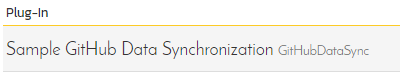

Using Spira with GitHub
This section outlines how to use SpiraTest, SpiraTeam or SpiraPlan (hereafter referred to as SpiraPlan) in conjunction with the GitHub integrated issue tracker.
STOP! Please make sure you have first read the Instructions in Setup before proceeding!
The GitHub issue tracker is a simple and lightweight tool used to track problems with an associated git repository. The built-in integration service enables two-way syncing of new incidents, new comments, statuses, and releases (milestones).
Configuring the Integration Service
This section outlines how to set up the integration service between GitHub and SpiraPlan. It assumes that you already have a working installation of SpiraPlan and a GitHub repository with an issue tracker. To setup the service, you must be logged into SpiraPlan as a user with System-Administrator level privileges.
Inside SpiraPlan, go to the Administration page and navigate to the Integration > Data Synchronization webpage. Check that you don't already have a Plug-In called "GitHubDataSync", as shown below:

If you already have a plug-in called GitHub Data Sync, please click on its "edit" button, otherwise please click the "Add" button to create a new plug-in:
You need to fill out the following fields for the GitHub Data Sync plugin to work properly:
-
Name -- This needs to be set to GitHubDataSync
-
Caption -- This is the display name of the plug-in, generally something generic like "GitHub" would work, but you should change it if you will be syncing with multiple GitHub projects.
-
Description -- The description of what you're using the plug-in for. This field is entirely optional and is not used by the system in any way.
-
Connection Info -- The location of your GitHub account, removing the actual repository name. For example, if you have a repository such as https://github.com/octocat/Hello-World, you would simply enter "octocat" as the connection info. We will enter the repository name later when we setup the project mappings.
-
Login -- Your GitHub username
-
Password -- A GitHub personal access token with the "public_repo" permission. You can create a new one at https://github.com/settings/tokens
-
Time Offset -- This should be set to 0, but if you find that changes are not being synced, try increasing the value to tell the plugin to offset timestamps
-
Custom 01 -- For on-premise GitHub Enterprise installations only, please enter the name of your server (e.g. http://myserver), if left blank, the data synchronization will assume you are using the cloud URL for GitHub (https://www.github.com)
The rest of the fields should be left blank. Once all those fields have been filled out, click the "Add" or "Save" button to save your changes.
Configuring Project Mappings
For this step, please ensure that you are in the SpiraPlan project you would like to sync with GitHub. For this example, the project is called "GitHub Data Sync."

Click on the "View Project Mappings" button for GitHub Data Sync. You need to fill out the following fields to sync correctly:
-
External Key -- The name of your GitHub repository. In the example above, where the URL in GitLab was https://github.com/octocat/Hello-World, you would simply enter "Hello-World" for this setting.
-
Active -- Set this to yes so that the Data Sync plug-in knows to synchronize with this project.
Now click the "Status" button within the "Incident" section to map the Incident statuses together. The purpose of this is so that the GitHub Data Sync plug-in knows what the equivalent status is in GitHub for an incident status in SpiraPlan.

You must map every status in the system. Descriptions of the field are below:
-
External Key -- Either open or closed, which are the only two statuses in GitHub
-
Primary -- You must have exactly one primary key for open and one for closed. This is what status the plug-in should set the incident in SpiraPlan to when the status in GitHub changes.
Click "Save" and assuming everything was done correctly, the plug-in should work. Start your Data Sync service and verify that issues in GitHub appear inside SpiraPlan. Note that the Data Sync service is not running constantly, so it may take some time for changes to materialize.
Congratulations, you have just integrated your Spira instance with GitHub's integrated issue tracker!